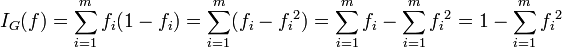
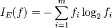
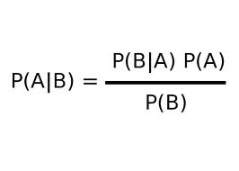
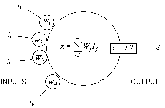

Data Mining Portfolio
Classification
Classification is the process of taking a new data point and predicting where it will end up when thrown into the dataset. In more specific terms calculates what's the most probable value for some unknown or excluded attribute. There are a variety of flavors of classifiers that I will be describing below. The important thing to keep in mind when looking at classifiers is their pitfalls. All of them have a task and data set that they are a little better suited for than others as well as visa versa. Another important thing to note when creating a classifier is to divide your dataset up so you have training data for your classifier and have testing data to see how well your classifier does. If however, you try to use all of your data as training data your model will likely succumb to the phenomena of over fitting. This happens when a model is trained to well that it is very sensitive to noise in your original dataset and will mislabel new elements that are very similar to that noise element.
Decision Tree
Decision tree classifiers are probably the simplest to understand. They boil down to a series of questions that can be answered with either yes or no and based on the answers leads down different paths of the tree until you've reached on classification or another. A real world example of this is a dichotomous key which is used by biologist to classify lifeforms. This ends up being a rather effective classification technique. The process of creating the classifier is rather straightforward. The first thing to do is to look at all the attributes and how they split up and chose the one that creates a greater split. There are three standard equations to measure this. Equations are provided below. Entropy which is the sum of the proportion of the data elements in the leaf nodes of one class to the whole times log2 of the proportion of the data elements in the leaf nodes of one class to the whole. Gini 1 minus the sum of the proportion of the data elements in the leaf nodes of one class to the whole squared. The third is called classification error and it is 1 minus the max of the proportion of the data elements in the leaf nodes of one class to the whole. The process is continued until every child node is pure an has only one class of data contained in it, or more commonly, when a certain threshold is met. The final step in the process is to trim the leaves. This is done by looking at the change in split from one leaf to it's children. This last step is done to prevent over fitting.
Equation of Gini impurity
Equation for Entropy

Example of decision tree using Titanic survivor information
Rule-Based
Rule-Based classifiers are very similar to decision tree classifiers in that if you take the path down a decision tree as your set of rules then you have created a rule based classifier. However unlike decision trees rule-based classifiers don't follow a binary approach to separation. Rule-Based classifiers instead look at all connections between objects to assemble rules. Say you have a dataset of animals and you want to classify them as mammals, reptiles, and other such phylum. A rule could be created that says that if it gives live birth and it's warm blooded then it's a mammal. A rule set of such rules can be created by looking at common correlations. In most cases results are listed in order of how correct they are with correctness usually being a fraction of correctly labeled data points over all data points that fit into that rule.
Nearest Neighbor
Nearest Neighbor is an excessively simple algorithm that looks at it's surroundings and fits groups itself in with the type that holds the majority of it's surroundings. Because this is so simple to implement it does have some drawbacks. The first being that the radius and distance metric determine what results are created. Assuming a proper distance metric is selected if the radius is to small then it has an tendency to group itself with noise points alternatively if it's radius is to large then it will not fit into a small group that it's in and decide it's part of the global mode.

A visual representation of NN classifier with different radii
Bayesian
Bayesian classifiers are logic/probabilistic/statistic based classifiers. This classifier is completely based on manipulating probability equations to calculate the probability of a new elements being of one class or the other. The equation used is the probability of A given B is the probability of B given A times the probability of A divided by the probability of B. So manipulating this equation around and plugging in know information the probability that is desired will emerge. An unfortunate aspect of this classifier is that it is tedious to look at all the different probability combinations to see what fits this model.
Bayes Theorem
Artificial Neural Network (ANN)
ANN's function off the perceptron model. This is a node that has a series of inputs, outputs, and an activation function. To create an ANN you assemble a large number of these perceptrons into a chain with weighted paths between them. Most often the perceptrons are placed in a three layer structure. The first layer is the input layer, the second is the hidden layer, and the third is the output layer. When a perceptron had a large enough sum of input weights to trip the activation function the perceptron gets turned on so to speak. To train an ANN you have a series of test data and translate it into a binary set. You feed the inputs into the input layer and have them propagate their values all the way through to the output layer. From here compare the result obtained to the expected result and back propagate any inconsistencies back to the input layer by changing the weights connecting the perceptrons for all perceptrons that were considered on.

A visual of an ANN
A visual of an perceptron
#include <stdio.h>
#include <stdlib.h>
#include <time.h>
#include <math.h>
#define numb_hidden_nodes 2
#define numb_in_nodes 3
#define numb_out_nodes 3
#define numb_test 1
#define n (double) .05
typedef struct {
double step;
double hidden_weights[numb_hidden_nodes];
} input_node;
typedef struct {
double out_weights[numb_out_nodes];
double value;
double step;
double error;
} hidden_node;
typedef struct {
double value;
double step;
double error;
} output_node;
typedef struct {
double exp_input[numb_in_nodes];
double exp_output[numb_out_nodes];
} train_case;
input_node in_nodes[numb_in_nodes];
hidden_node hide_nodes[numb_hidden_nodes];
output_node out_nodes[numb_out_nodes];
train_case test[numb_test] = { { { 1.0, 0.25, -0.5}, { 1.0, -1.0, 0.0} } };
void create_weights(){
int i, j, k;
for( i = 0; i < numb_in_nodes; i ++){
for(j = 0; j < numb_hidden_nodes; j ++){
in_nodes[i].hidden_weights[j] =
pow( -1.0, (rand() % 2)) * (rand() % 10 + 1) / 100.0 ;
}
}
for( j = 0; j < numb_hidden_nodes; j ++){
for(k = 0; k < numb_out_nodes; k ++){
hide_nodes[j].out_weights[k] =
pow( -1.0, (rand() % 2)) * (rand() % 10 + 1) / 100.0 ;
}
}
}
double sigmoid(double a){
return (2.0/(1+exp(0-a)) - 1);
}
double sigmoid_d(double a){
double b = sigmoid(a);
return b*(1 - b);
}
void train(){
create_weights();
int i, j, k;
double mse = 1, temp;
do {
//get what test to do
int test_num = rand() % numb_test;
//clear hidden and output node values
for( j = 0; j < numb_hidden_nodes; j ++){
hide_nodes[j].value = 0;
}
for( k = 0; k < numb_out_nodes; k ++){
out_nodes[k].value = 0;
}
//feed forward to hidden layer
for(i = 0; i < numb_in_nodes; i ++){
in_nodes[i].step = test[test_num].exp_input[i];
for( j = 0; j < numb_hidden_nodes; j ++){
hide_nodes[j].value +=
in_nodes[i].hidden_weights[j] * in_nodes[i].step;
}
}
//get hidden layer steps
//feed forward to output layer
for( j = 0; j < numb_hidden_nodes; j ++){
hide_nodes[j].step = sigmoid(hide_nodes[j].value);
for( k = 0; k < numb_out_nodes; k ++){
out_nodes[k].value +=
hide_nodes[j].out_weights[k] * hide_nodes[j].step;
}
}
//get output layer steps
for( k = 0; k < numb_out_nodes; k ++){
out_nodes[k].step = sigmoid(out_nodes[k].value);
}
//calc error in out_nodes
for( k = 0; k < numb_out_nodes; k ++){
out_nodes[k].error = test[test_num].exp_output[k] -
out_nodes[k].step * sigmoid_d(out_nodes[k].step);
}
//calc error in hide_nodes
for( j = 0; j < numb_hidden_nodes; j ++){
hide_nodes[j].error = 0;
for( k = 0; k < numb_out_nodes; k ++){
hide_nodes[j].error +=
hide_nodes[j].out_weights[k] * out_nodes[k].error;
}
hide_nodes[j].error *= sigmoid_d(hide_nodes[j].step);
}
//update the weights
for( j = 0; j < numb_hidden_nodes; j ++){
for( k = 0; k < numb_out_nodes; k ++){
hide_nodes[j].out_weights[k] +=
n * out_nodes[k].error * hide_nodes[j].step;
}
}
for ( i = 0; i < numb_in_nodes; i ++){
for( j = 0; j < numb_hidden_nodes; j ++){
in_nodes[i].hidden_weights[j] +=
n * hide_nodes[j].error * in_nodes[i].step;
}
}
//calcuate mean standard error
mse = 0.0;
for (k = 0; k < numb_out_nodes; k ++){
temp = test[test_num].exp_output[k] - out_nodes[k].step;
mse += temp*temp;
}
mse /= (double) numb_in_nodes;
// try again
} while (mse > 0.001);
return;
}
void printFinalOutput(){
int i, j, k;
//get what test to do
int test_num = 0;
//clear hidden and output node values
for( j = 0; j < numb_hidden_nodes; j ++){
hide_nodes[j].value = 0;
}
for( k = 0; k < numb_out_nodes; k ++){
out_nodes[k].value = 0;
}
//feed forward to hidden layer
for(i = 0; i < numb_in_nodes; i ++){
in_nodes[i].step = test[test_num].exp_input[i];
for( j = 0; j < numb_hidden_nodes; j ++){
hide_nodes[j].value += in_nodes[i].hidden_weights[j] * in_nodes[i].step;
}
}
//get hidden layer steps
//feed forward to output layer
for( j = 0; j < numb_hidden_nodes; j ++){
hide_nodes[j].step = sigmoid(hide_nodes[j].value);
for( k = 0; k < numb_out_nodes; k ++){
out_nodes[k].value += hide_nodes[j].out_weights[k] * hide_nodes[j].step;
}
}
//get output layer steps
for( k = 0; k < numb_out_nodes; k ++){
out_nodes[k].step = sigmoid(out_nodes[k].value);
printf("output node: %d val: %lf\n", k, out_nodes[k].step);
}
}
main(){
srand ( time(NULL) );
printf("training\n");
train();
printf("done training\n");
printFinalOutput();
return 0;
}